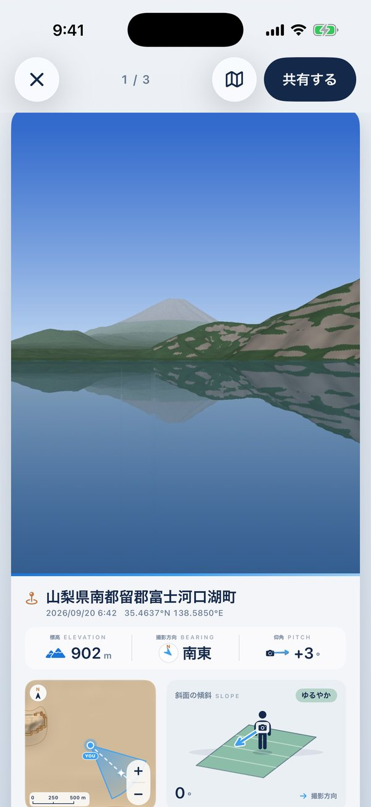
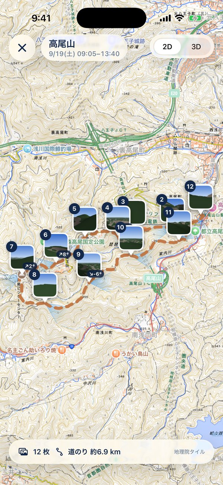
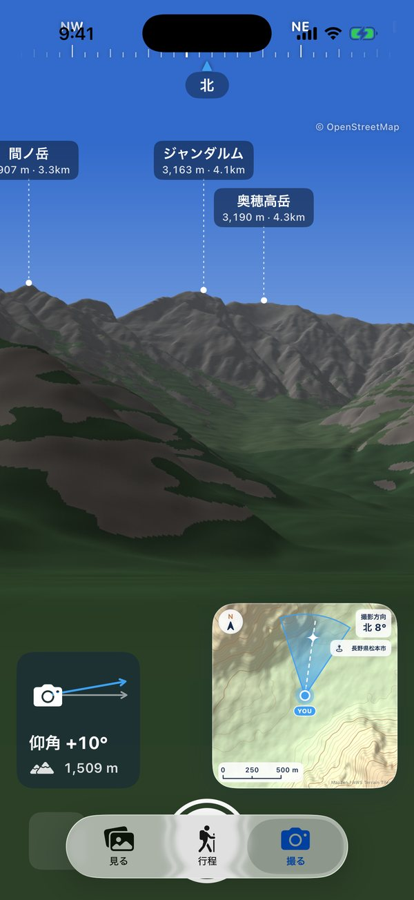
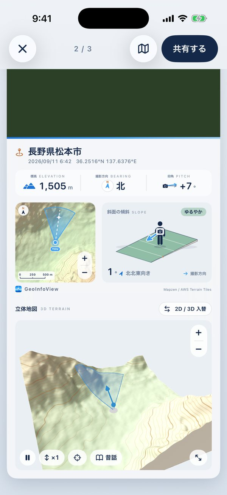
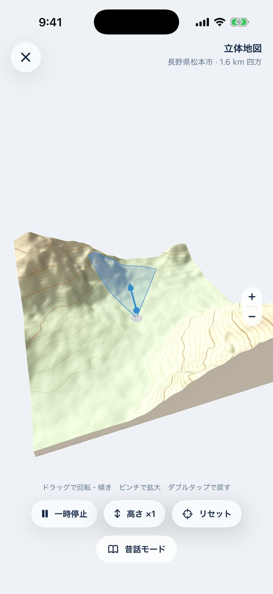
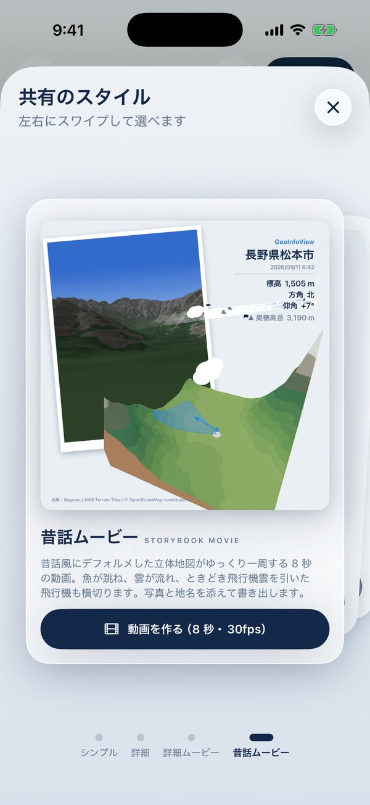
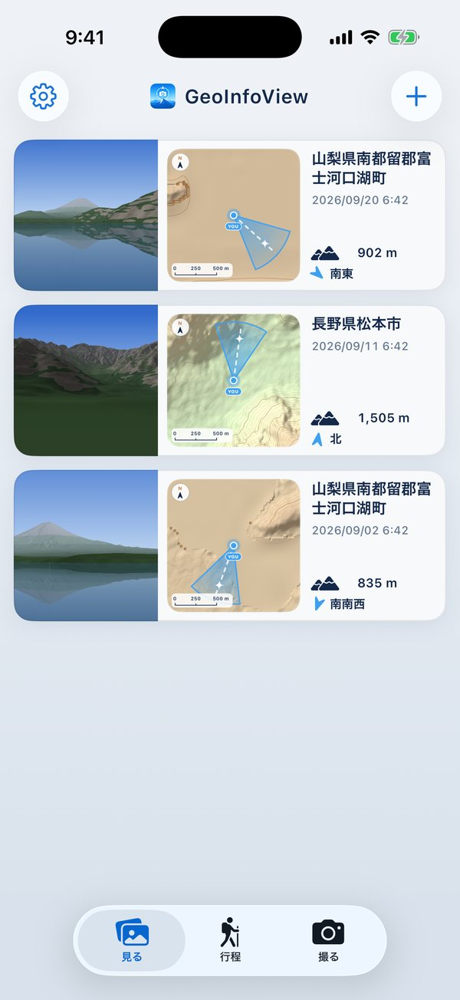

あの日、どこに立って、どっちを向いて、どんな山に囲まれていたか。GeoInfoView は、写真に記録された位置と向きから、撮影地点の地図・撮影方向・標高・仰角・足もとの斜面・立体地図を、写真とひと続きのカードで見せる iPhone アプリです。カメラを向ければ、見えている山の名前もわかります。 Where were you standing, which way were you facing, and what mountains surrounded you? GeoInfoView reads where a photo was taken and which way the camera was pointing, then shows the map, bearing, elevation, pitch, slope and a 3D view of the terrain on one card with the photo. Point the camera at the mountains to see their names.
iPhone 用 · 無料 · アカウント登録なし · 写真は開発者に送られません For iPhone · Free · No account · Your photos are never sent to the developer

写真アプリから、位置情報つきの写真を選ぶだけ。国内も海外も表示できます。Just pick geotagged photos from your library — anywhere in the world.
向き・仰角・標高と、見えている山の名前を表示しながら撮影。撮った写真に向きと仰角も残ります。Shoot with bearing, pitch, elevation and nearby peak names on screen. Bearing and pitch are saved with the photo.
地名とデータを添えた画像や、立体地図が一周する動画にして、写真に保存・SNSで共有。Export an image with the place and data, or a movie that circles the 3D map. Save it or share it.
山や旅先で撮った写真を、「どこから・どっちを向いて・どんな地形の中で」撮ったのかと一緒に残せます。Keep your mountain and travel photos together with where you stood, which way you looked, and the land around you.
写真のすぐ下に、地名・撮影日時・座標と、標高・撮影方向・仰角。上下にスクロールするだけで、写真から地形の情報へ移れます。左右のスワイプで前後の写真へ。Right under the photo: the place name, date, coordinates, elevation, bearing and pitch. Scroll down to go from the photo to the terrain, and swipe sideways for the next photo.

日付を選ぶだけで、その日の写真を場所ごとの行程に分けます。高尾山に登った写真はひとまとめに、帰りの八王子での飲み会は別の行程に。山小屋に泊まって日をまたいでも、同じ山にいればひとつの行程です。Pick a date and your photos are grouped into journeys by place. A day hike becomes one journey, while dinner in town afterwards becomes another. Stay overnight in a mountain hut, and it's still one journey.

カメラを山に向けると、見えている山の名前・標高・距離を表示します。尾根に隠れて見えない山は出しません。上には方位のテープ、左下に仰角と今いる場所の標高、右下に撮影方向つきの地図。Point the camera at the mountains to see each visible peak's name, height and distance — peaks hidden behind ridges are left out. A compass tape runs along the top, with your pitch and elevation at lower left and a map with your view direction at lower right.

地図には撮影地点と、写っている範囲を示す扇形。＋／−で 800m から 12.8km 四方まで広げられます。となりには、足もとの斜面の傾きとカメラの向きを図で。The map marks where you stood and a cone showing what the photo covers. Zoom from 800 m to 12.8 km across. Next to it, a diagram shows the slope under your feet and the camera's direction.

撮影地点のまわりの地形を立体で表示。ドラッグで回転・傾き、ピンチで拡大。高さを強調して、谷や尾根の形をたしかめることもできます。撮影方向の扇形も地形に沿って描きます。See the land around your shot in 3D. Drag to rotate and tilt, pinch to zoom, and exaggerate the height to read valleys and ridges. Your view cone is draped over the terrain.

共有のスタイルは4つ。左右にスワイプして選べます。Four sharing styles — swipe to choose.

撮影日時の新しい順に、写真と撮影方向つきの地図、地名・標高・方角を1行ずつ。左右にスワイプすると一覧から外せます（写真そのものは消えません。すぐ取り消せます）。Newest first: each row shows the photo, a map with the view direction, the place, elevation and bearing. Swipe a row to remove it from the list — the photo itself isn't deleted, and you can undo right away.
アカウントも、開発者のサーバーもありません。No account, and no developer server.
選んだ写真と撮った写真は、この iPhone のアプリ内にだけ保存します。どこにもアップロードしません。Photos you pick or take are stored only inside the app on your iPhone. Nothing is uploaded.
地図・標高・山名を取り寄せるとき、撮影地点のまわりの範囲を地図サービスに伝えます。写真は送りません。To fetch maps, elevation and peak names, the area around the photo's location is requested from map services. Photos are never sent.
広告や利用状況の解析ツールは入っていません。No advertising or analytics tools are included.
地図・標高・山名などはすべて、提供元が無料で公開しているデータです。それぞれの利用条件で求められている出典の表示と、サーバーの負担を抑える使い方を守って利用しています。All maps, elevation and peak data come from sources that publish them free of charge. The app shows the attribution each source requires and uses their servers sparingly.
| 提供元Source | 使っているものUsed for | 利用条件と、このアプリでの扱いTerms, and how the app follows them |
|---|---|---|
| 国土地理院（地理院タイル）GSI Tiles (Geospatial Information Authority of Japan) | 国内の地図・標高・陰影起伏（設定で「地理院・Apple」を選んだとき）Maps, elevation and hillshade in Japan (when "GSI / Apple" is chosen in Settings) | 国土地理院コンテンツ利用規約に基づき利用。アプリ内ではタイルをその都度読み込んで表示し（出典の明示のみで申請不要とされている使い方）、地図の横に「地理院タイル」と表示。書き出す画像・動画にも出典を記載。Used under the GSI Content Terms of Use. Tiles are loaded in real time for display (the use GSI allows with attribution only), with "地理院タイル" shown next to the map. Exported images and movies carry the credit too. |
| OpenStreetMap | 山名・山頂、行程の道Peak names, and paths for Journeys | ODbL（オープンデータベースライセンス）。山名や道を表示する画面と、書き出す画像・動画に「© OpenStreetMap contributors」を表示。データは Overpass API（主に private.coffee）から取得し、公開サーバーの負担を抑えるため、1 台あたり 1 日 100 回までに制限し、取得した結果は端末に保存して使い回します。ODbL. "© OpenStreetMap contributors" is shown wherever peak names or paths appear, including exported images and movies. Data is fetched from the Overpass API (mainly private.coffee); to go easy on these public servers, each device is limited to 100 requests a day and results are cached on the device. |
| Terrain Tiles (Mapzen / AWS) | 標高と、そこからアプリが描く地形図（標準の設定では国内・海外とも）Elevation, and the terrain map the app draws from it (by default, in Japan and abroad) | AWS のオープンデータとして無料で公開。「Mapzen」と、元データ（USGS、NOAA、Copernicus EU-DEM、Geoscience Australia など）の出典一覧をアプリの設定画面に掲載。Free on the AWS Open Data registry. "Mapzen" and the list of underlying sources (USGS, NOAA, Copernicus EU-DEM, Geoscience Australia and others) are credited in the app's Settings. |
| Apple マップApple Maps | 地名、行程の地図、海外の地図（設定で「地理院・Apple」を選んだとき）Place names, the Journeys map, and maps abroad (when "GSI / Apple" is chosen) | iOS の MapKit を通じて、Apple Developer Program の条件で利用。Used through iOS MapKit under the Apple Developer Program terms. |
出典や利用条件についてお気づきの点があれば、下のお問い合わせ先までご連絡ください。If you notice any issue with attribution or terms, please let us know via the contact below.
撮影場所（位置情報）が記録されていない写真では、地図と地形の情報を表示できません。Web や SNS から保存した画像、位置情報をオフにして撮った写真などが当てはまります。Photos without a saved location can't show maps or terrain — for example images saved from the web or social media, or photos taken with Location Services off.
撮影方向は、写真に記録された向きの情報を使います。向きが記録されていない写真では扇形を表示しません。このアプリの「撮る」で撮影すると、撮影方向と仰角も記録されます。The cone uses the direction stored in the photo. If a photo has no direction, no cone is drawn. Photos taken with the app’s camera record bearing and pitch too.
山の名前は、画面に空が映っていて、位置情報とコンパスが使えるときに表示します。山頂のデータは OpenStreetMap から取得するため、通信が必要です。登録されていない山は表示されません。Peak names appear when the sky is in view and location and compass are available. Peak data comes from OpenStreetMap, so a connection is needed, and unlisted peaks won't show.
はい。海外では Apple マップの地図と、世界の標高データ（Terrain Tiles）を使います。国内より地図の細かさが下がる場所があります。Yes. Outside Japan it uses Apple Maps and global elevation data (Terrain Tiles). Detail may be lower than in Japan in some areas.
撮影はできますが、地図・標高・山名の取得には通信が必要です。一度表示した場所のデータは、しばらく端末に残るので、次からは速く表示されます。You can still take photos, but maps, elevation and peak names need a connection. Data for places you've viewed is kept on the device for a while, so they load faster next time.
消えません。一覧に表示しなくなるだけで、写真アプリの元の写真もそのまま残ります。外した直後は「取り消す」で元に戻せます。No. It's only hidden from the list, and the original in the Photos app stays as it is. You can tap Undo right after removing it.
選んだ日から撮影順にたどり、直前の写真の近く（おおむね1.5〜4km 以内）で撮った写真を同じ行程にまとめます。離れた場所で撮ると別の行程になり、次の日の写真が関係のない場所なら、そこで止まります。道筋は OpenStreetMap の道のデータから探し、わからない区間は無理に結びません。Starting from the chosen date, photos are followed in order; photos taken near the previous ones (roughly within 1.5–4 km) join the same journey. Moving far away starts a new one, and if the next day is somewhere unrelated, it stops there. Routes come from OpenStreetMap path data; sections without a clear path are left unconnected.
iPhone 専用です（iOS 26 以上）。It's for iPhone only (iOS 26 or later).
ご意見・不具合のご報告は、こちらまでお気軽にどうぞ。Questions, feedback or bug reports are welcome.